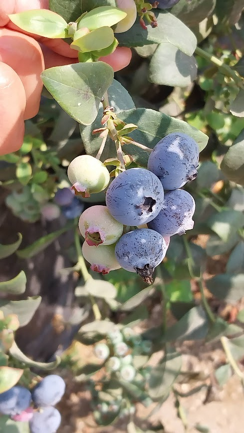
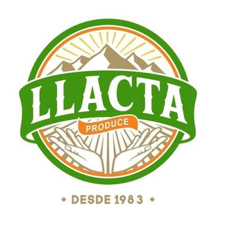
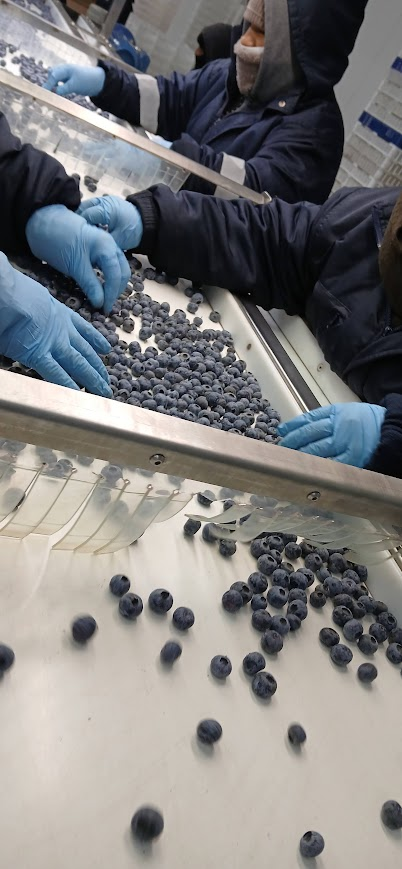
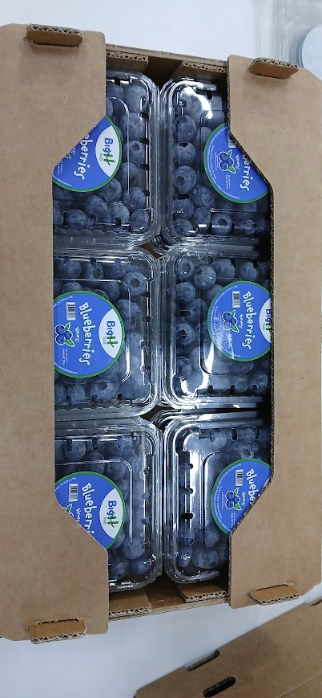
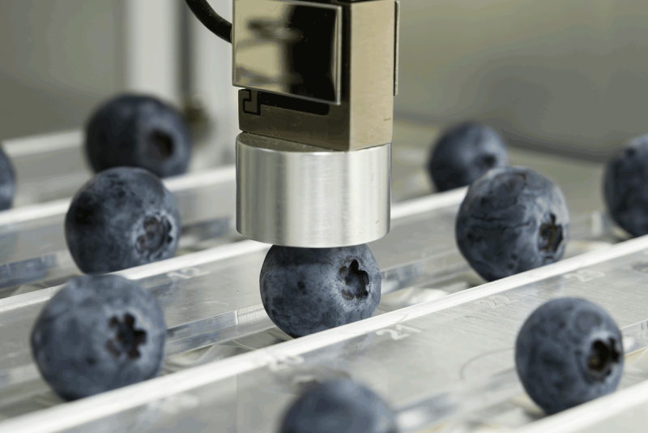
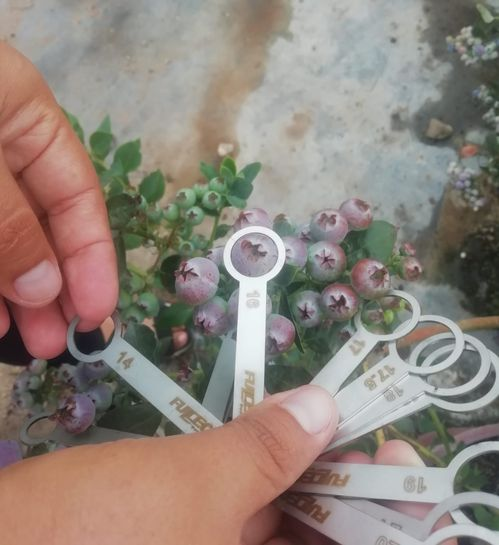
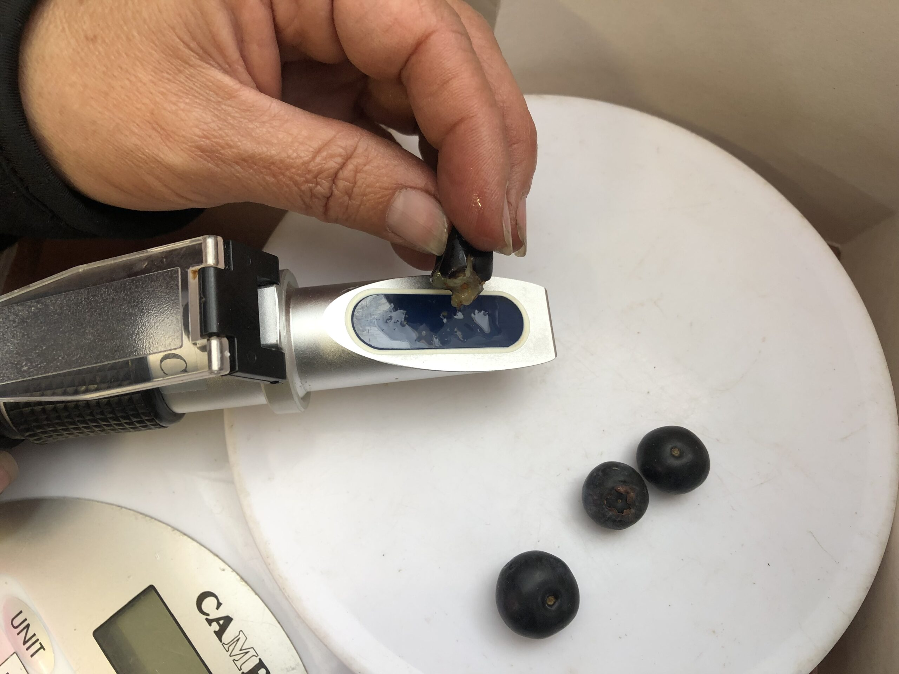
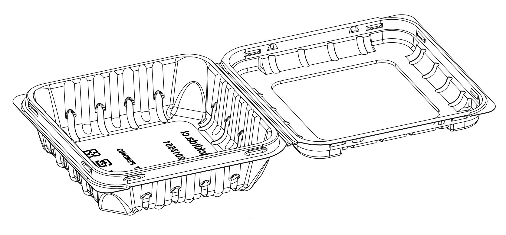
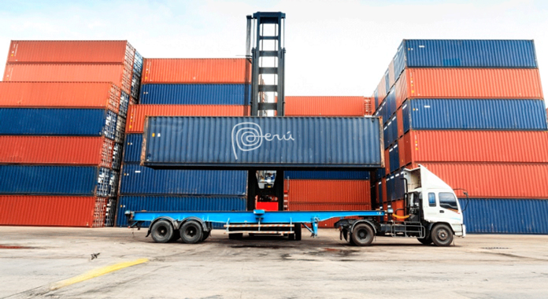

En puerto de destino
Arribo simulado al puerto de Vancouver. Pendiente de liberación y traslado al importador.
Último movimiento simulado
VARIEDAD
LOTE: --
--
Conoce el lugar donde comienza la historia de este lote.

El lugar, la variedad y el lote quedan unidos desde el primer registro.
--

Cada lote conserva los datos que permiten seguir su historia desde el campo.

Variedad: --
Fundo: --

Ventura es una variedad de arándano ampliamente utilizada en la producción peruana y con una presencia importante en mercados de exportación.
Es reconocida por características que favorecen el transporte y la comercialización a largas distancias.
Se describe por presentar buen tamaño, bloom y una apariencia comercial atractiva.
Su productividad ha contribuido a su amplia presencia en campos de producción peruanos.
El comportamiento final del fruto también depende del ambiente, manejo agronómico y condiciones de producción.
Información divulgativa de esta variedad pendiente de incorporación.
Toca cada indicador para entender qué significa y por qué importa.
Consultando información…
La firmeza indica cuánto se resiste el fruto a deformarse cuando recibe presión. Está relacionada con la turgencia del tejido, es decir, con qué tan bien conservan sus células el agua y la presión interna.

El calibre corresponde al diámetro ecuatorial del fruto, es decir, al ancho del arándano medido en su zona central.

Los °Brix indican la concentración de sólidos solubles en el jugo del fruto. En los arándanos, una parte importante de estos sólidos corresponde a azúcares.

La acidez representa la cantidad de ácidos orgánicos presentes en el fruto. Estos compuestos participan directamente en la percepción del sabor.
Consultando información…
Es el envase que contiene y protege los arándanos durante su manipulación, almacenamiento y transporte.

Es el enfriamiento inicial de la fruta después de la cosecha.
Es la temperatura registrada en la cámara donde se conserva el lote.
Indica la proporción de oxígeno registrada en la atmósfera de conservación.
Indica la proporción de dióxido de carbono registrada en la atmósfera de conservación.

Sin información de recorrido registrada.
Origen pendiente
Selección, acondicionamiento y empaque.
Consulta los registros en la página anterior.
Transportista pendiente
Puerto de origen pendiente
Destino pendiente
Destino del ejemplo: North Vancouver, Canadá.
Historial ilustrativo de 2024. Los movimientos logísticos son simulados; la fecha de packing procede del ticket.
Arribo simulado al puerto de Vancouver. Pendiente de liberación y traslado al importador.
Último movimiento simuladoSalida simulada del puerto de origen, con destino a Canadá.
Ingreso simulado al puerto del Callao para gestionar el embarque.
Fecha indicada en el ticket. Packinghouse: VERDEFLOR S.A.C.
Dato del ticket